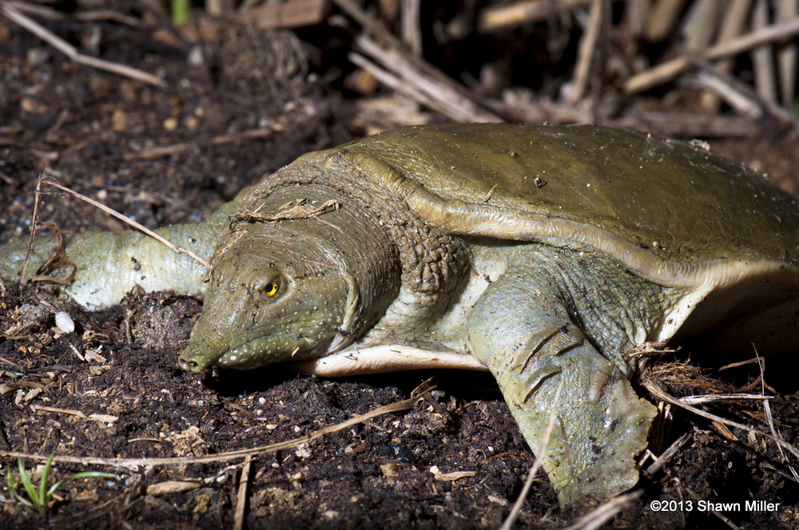
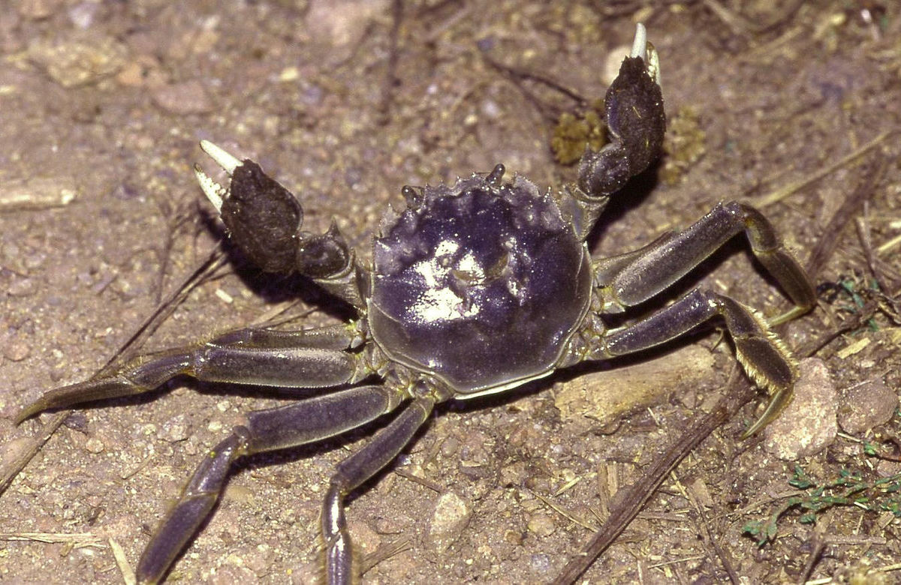
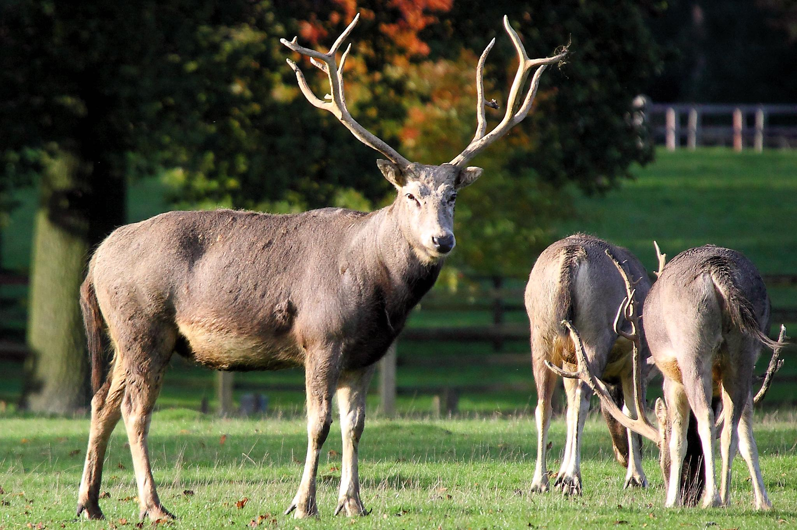
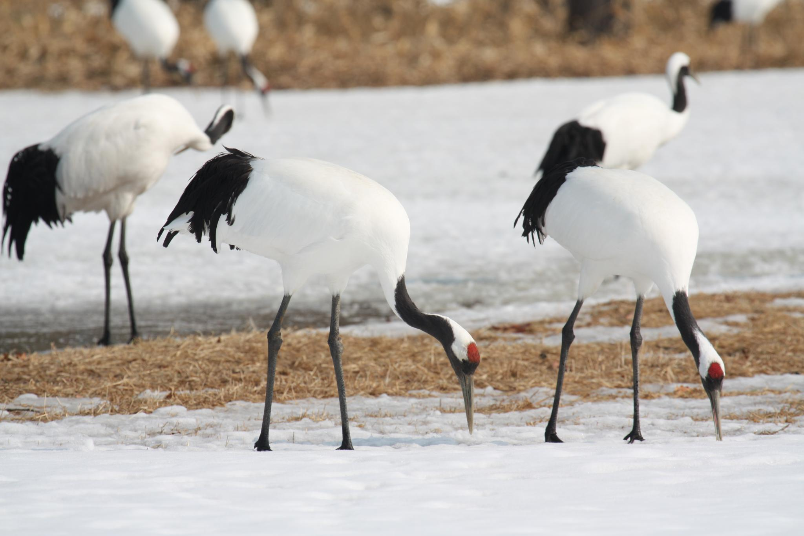

| Animal Name | Species | Lives in | Image |
|---|---|---|---|
| Chinese White Dolphin | S. chinensis | Eastern China's sea and coastal areas | |
| Chinese Softshell Turtle | P. sinensis | Freshwater habitats in Eastern China |  |
| Chinese Mitten Crab | E. sinensis | Freshwater rivers and estuaries in Eastern China |  |
| Pere David's Deer | E. davidianus | Marshland habitats in China |  |
| Red-crowned Crane | G. japonensis | Marshland habitats in Northeastern Asia |  |